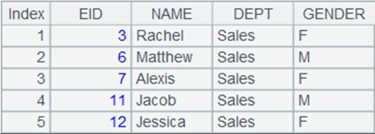

Description:
Get records meeting the given condition from a cursor.
Syntax:
cs.select(x)
Note:
The function calculates expression x against each of the records in cursor cs and returns a cursor containing records that can make the value of x true. When parameter x is omitted, return the original cursor with all records. The function supports multicursors.
Parameter:
|
cs |
A cursor |
|
x |
A boolean value |
Return value:
The original cursor with eligible records
Example:
|
|
A |
|
|
1 |
=demo.cursor("select * from SCORES") |
|
|
2 |
=A1.select(STUDENTID>10) |
Select the records where STUDENTID is greater than 10 from the SCORE table |
|
3 |
=A2.fetch() |
 |